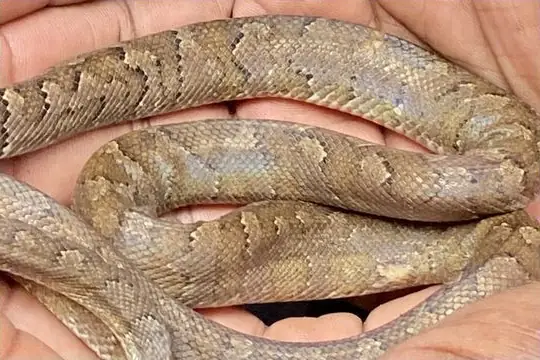

Snakes of British Virgin Islands
6 snake species are recorded in British Virgin Islands in SnakeList: 0 venomous and 6 non-venomous, from 3 families.
- 6species
- 6non-venomous
- 3families
Species
Showing 6 species
 Erica's Worm Snake (catapontus)Antillotyphlops catapontus
Erica's Worm Snake (catapontus)Antillotyphlops catapontus- No photo yetErica's Worm Snake (naugus)Antillotyphlops naugus
 Ground Snake (exiguus)Magliophis exiguus
Ground Snake (exiguus)Magliophis exiguus Puerto Rican RacerBorikenophis portoricensis
Puerto Rican RacerBorikenophis portoricensis- No photo yetRichard's Worm SnakeAntillotyphlops richardi

Virgin Islands BoaChilabothrus granti
No snakes in British Virgin Islands match.
British Virgin Islands’s snakes in numbers
- Families: Typhlopidae 3, Colubridae 2, Boidae 1.
- 2 are recorded in no other country in SnakeList: Erica's Worm Snake (catapontus), Erica's Worm Snake (naugus).